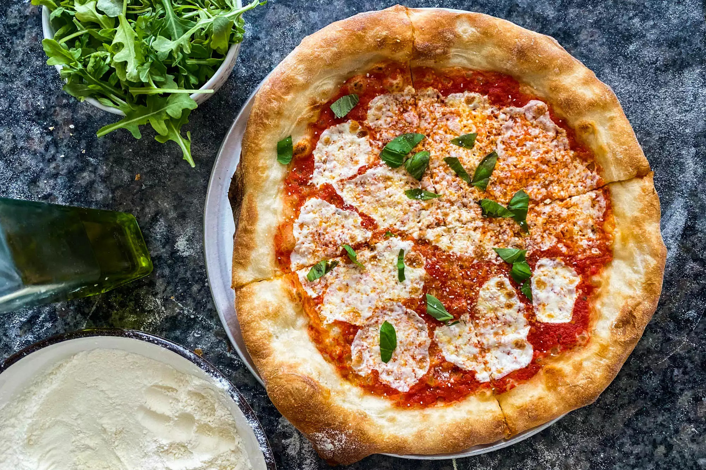

Pizza

Description
Pizza dough is the base for most of the pizza recipes and a good start to understand the semplicity of making dough from scratch.
Ingredients
- 300g strong bread flour
- 1 tsp instant yeast
- 1 tsp salt
- 1 tbsp olive oil, plus extra for drizzling
Steps
- Put the flour into a large bowl, then stir in the yeast and salt.
- Make a well, pour in 200ml warm water and the olive oil and bring together with a wooden spoon until you have a soft, fairly wet dough.
- Turn onto a lightly floured surface and knead for 5 mins until smooth. Cover with a tea towel and set aside.
- You can leave the dough to rise if you like, but it’s not essential for a thin crust.